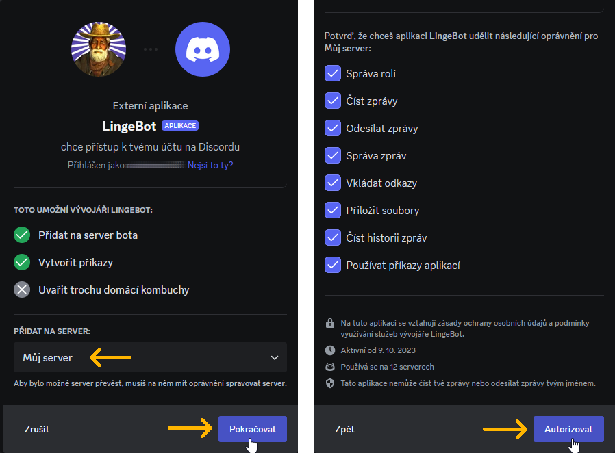
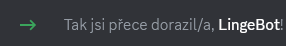
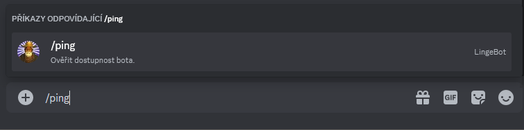
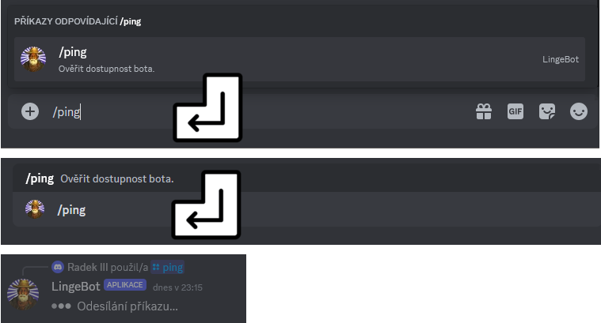
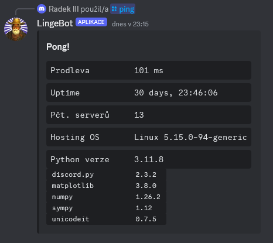

Přidání bota na server a oveření jeho dostupnosti příkazem /ping
Jak na svůj server přidat LingeBota
Tato sekce popisuje, jak na svůj server přidat hlavní instanci LingeBota.
1. V prohlížeči, ve kterém jste přihlášeni do webové aplikace Discord, otevřete tento zvací odkaz:
https://discord.com/oauth2/authorize
?client_id=1160906076179415070
&permissions=2416045056
&scope=bot+applications.commands
2. Ve výběrovém seznamu zvolte server, na který chcete bota přidat. Potvrďte tlačítkem Pokračovat a v následujícím okně tlačítkem Autorizovat.

3. LingeBot je nyní členem vybraného serveru.

Jak zadávat příkazy, jak ověřit dostupnost LingeBota
1. Napište do kolonky pro zadávání zpráv a příkazů řetězec /ping.

Discord během psaní začne našeptávat odpovídající příkazy. Po dopsání celého řetězce už zbyde jen příkaz /ping. Pokud se na serveru nachází více botů se stejně pojmenovaným příkazem, zobrazí se zde všechny. Nejvíce relevantní příkaz v seznamu našeptávače je zvýrazněn a tedy vybrán. Pro vybrání jiného lze využít šipek na klávesnici. Výběr je potvrzen stiskem klávesy enter.
2. Stiskněte klávesu enter pro potvrzení výběru příkazu /ping, druhým stiskem klávesy enter příkaz odešlete.

3. Pokud je bot funkční, odpoví zprávou se základními informacemi o provozu.
